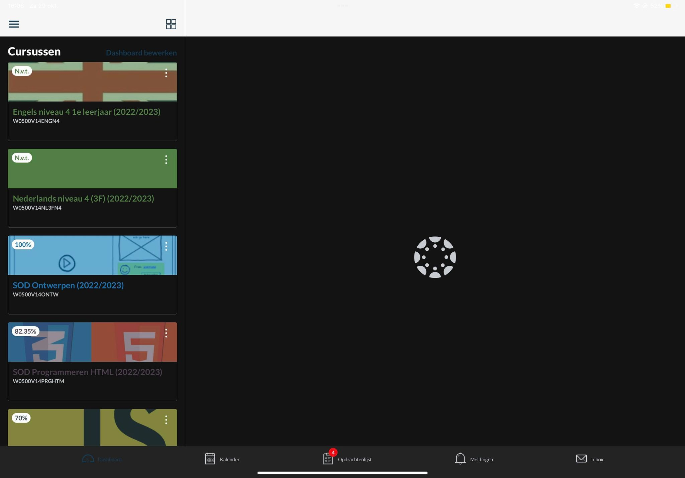
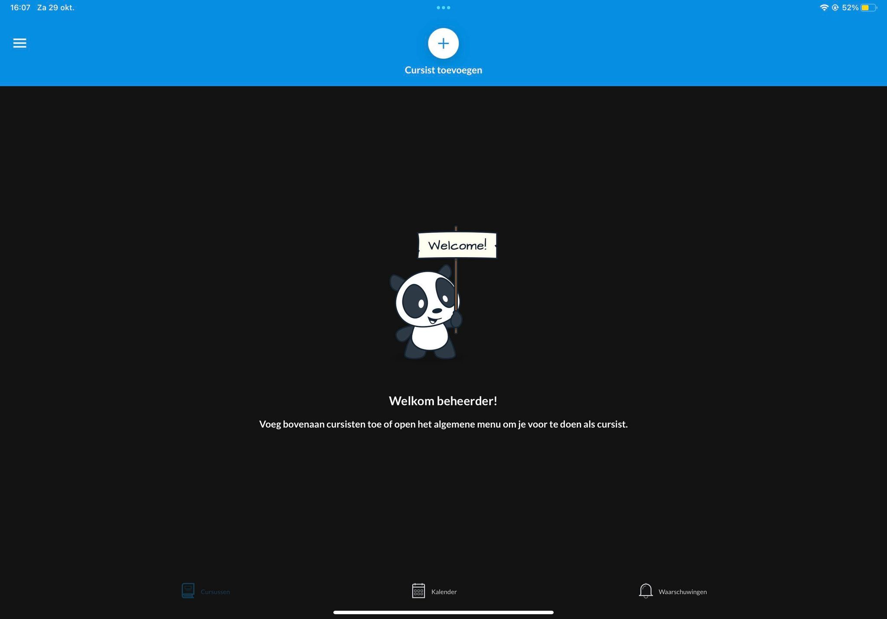

Canvas
Cursussen
In totaal hebben wij 6 cursussen, die 6 cursussen zijn Nederlands, Engels, Ontwerpen, Programmeren HTML, Programmeren Javascript en Project 1. In Nederlands en Engels leren wij op een geavanceerde level de regels van deze talen. Bij ontwerpen gaan we vooral aan de slag met technieken van het werkproces 'ontwerpt software'. Je leert hier hoe je ontwerpen maakt net als een sitemap of een webdesign. Bij programmeren leer je de basisprincipes van HTML/CSS. Deze zijn hele belangrijk voor het maken van een website. Tijdens het cursus programmeren Javascript leer je alle technieken om in periode 2 een browser game te kunnen maken voor het project. Ons laatste cursus momenteel is project periode 1. De opgave is om een website te maken voor de ouderavond. De website die u momenteel ziet is dat website. Later krijgen wij zeker wel meer cursussen, maar momenteel is dit het lijst.

Kalender
In de kalender van Canvas kan je vele dingen doen, in dit paragraaf ga ik ze uitleggen aan u. Het belangrijkste doel van de kalender in Canvas is het laten zien welke opdrachten een deadline hebben op een dag. Naast dat kan je ook kijken naar wat je een paar maanden later moet inleveren. Je kan ook zelf een datum en opdracht in het kalender leggen. Dit is handig als je een deadline voor jezelf wilt zetten.

Inbox
In het inbox van Canvas kan je alle berichten zien die hebt gekregen van de leraren. Je kan ook specifiek kiezen van welk opleiding je de berichten wilt zien. Je kan ook berichten sturen naar de docenten of andere medestudenten, voor help. Momenteel gebruiken wij het inbox niet, maar later waarschijnlijk wel.

De Canvas app voor studenten
Als je canvas wilt gebruiken op je telefoon of tablet. Is er een app voordat, de Canvas studenten app. Op de canvas studenten app kan je vele dingen doen en zien. Net als op de canvas website kun je alle cursussen zien en de opdrachten erin ook. Je kan ook de kalender zien en ook een paar meldingen over cijfers enz. je kan ook berichtjes sturen via de inbox naar leraren en medestudenten.
De Canvas app voor ouders
Op het canvas app voor ouderen kan je bijna alles zien wat jouw minderjarige kind ook ziet. Ik zeg minderjarig want als jouw kind boven de 18 jaar is werkt de app niet. Je kan de kalender en de inbox zien.
